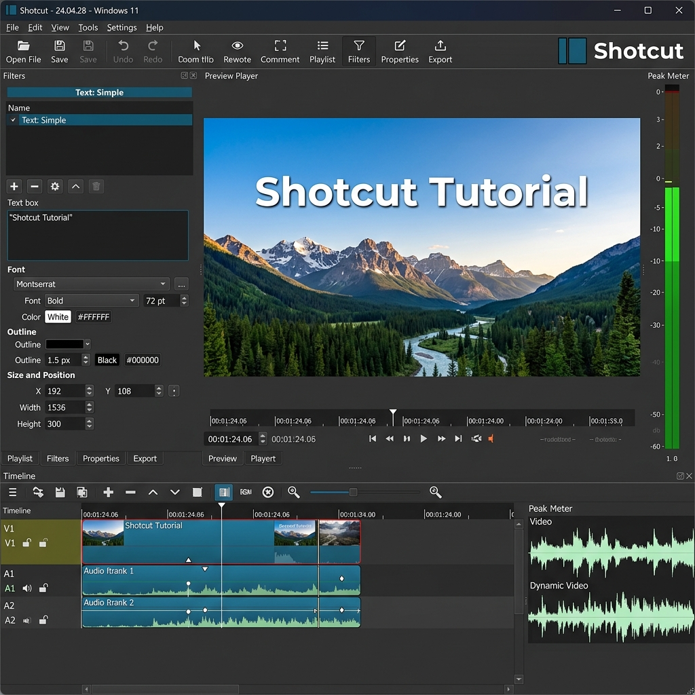
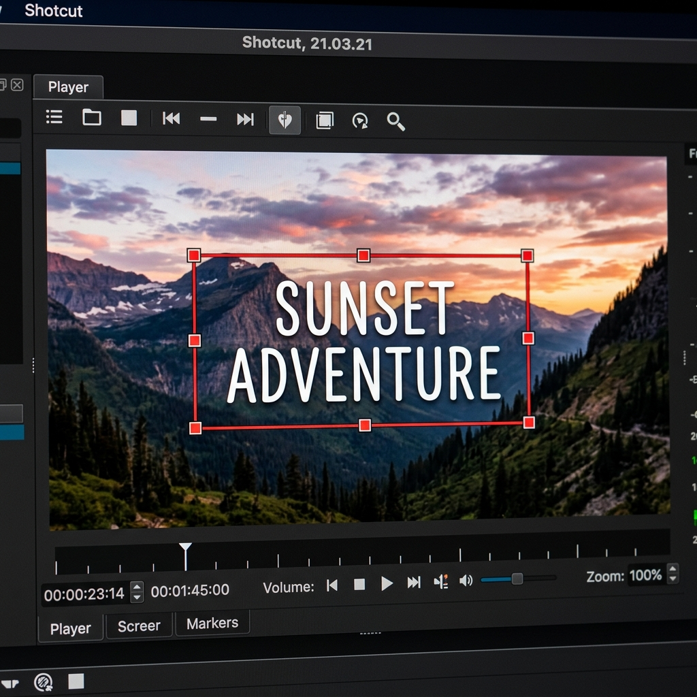
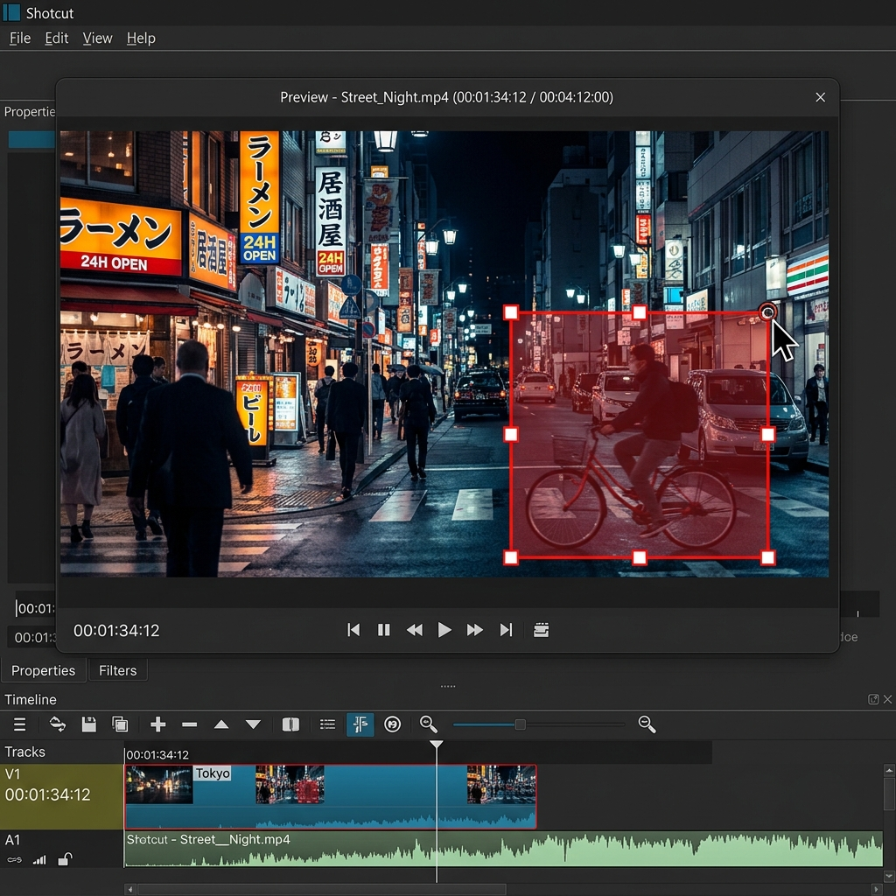
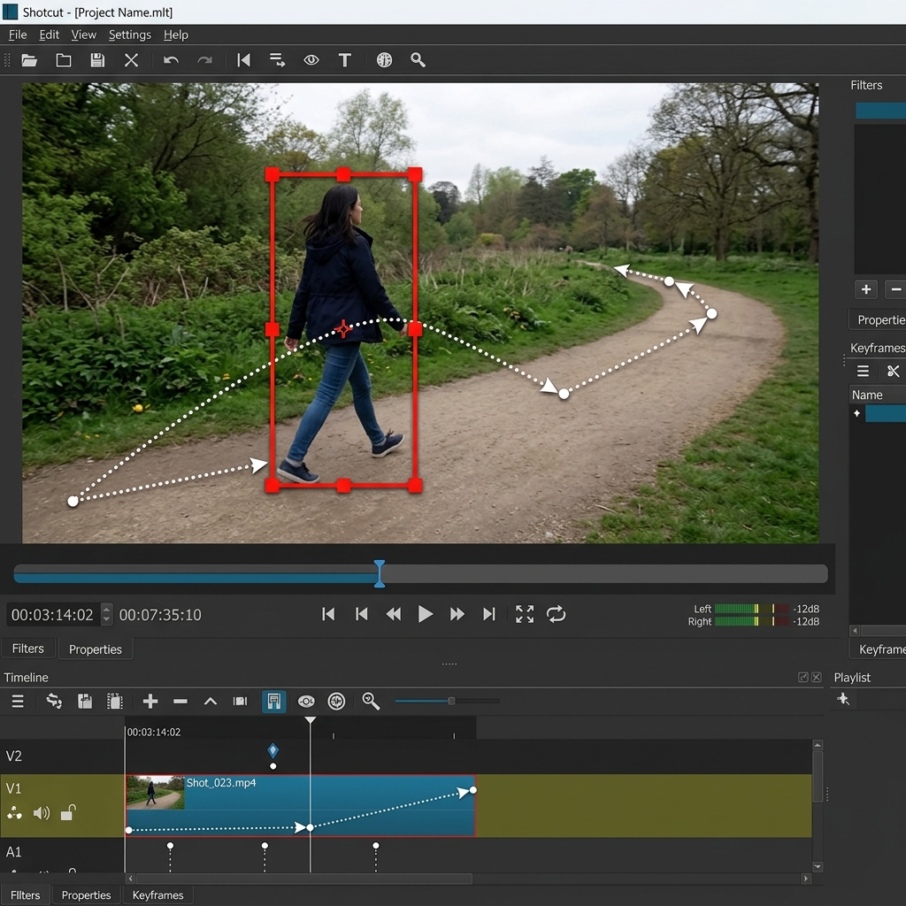

工作區介面導覽
Shotcut 採用模組化的面板設計。點擊下方視覺化介面中的不同區塊，可立即查看對應的功能說明。
播放清單與濾鏡面板
左側主要面板區這是您集中管理影片素材與設定特效的地方。它包含了：
- 播放清單 (Playlist)：將電腦中的影片、圖片、音效拖曳到此處進行預備。
- 濾鏡面板 (Filters)：選取時間軸的片段後，點擊「+」即可為影片加入模糊、調色、淡入淡出或字幕等豐富特效。
- 屬性面板 (Properties)：顯示目前選取素材的詳細參數（如解碼率、解析度、速度）。
五步新手剪輯教學
一步一步帶您完成從素材準備到影片導出的完整剪輯工作流程。
步驟 1：建立專案與環境設定
正確開啟專案，能確保您的輸出影片比例與來源一致，避免畫面被黑邊裁剪或解析度下降。
- 設定專案資料夾 在主畫面的「專案資料夾」中選擇一個固定的儲存目錄，用來存放剪輯產生的專案檔。
- 命名專案 在「專案名稱」輸入檔名（例如：`MyFirstVlog`）。
- 選擇視訊模式（解析度） 建議選擇 HD 1080p 30fps 或 Automatic（自動）。自動模式會依據您匯入的第一支影片，自動設定專案解析度與幀率。
步驟 2：導入素材與基本裁剪
將影片分割成許多片段，去蕪存菁，是所有影片剪輯的核心基本功。
- 拖曳匯入 直接將電腦裡的影片檔拉進 Shotcut 左側的「播放清單」面板中。
- 新增軌道至時間軸 將播放清單裡的影片，拖曳拉到下方長條型的「時間軸」上，此時會自動建立一條視訊軌道（V1）。
- 精確分割片段 (Split) 把紅色時間線（指針）移到想剪開的位置，按下鍵盤上的 S，就能將影片一分為二。
- 刪除不要的片段 (Ripple Delete) 在要刪除的段落點右鍵，選擇「波紋刪除」，或直接按 Shift + Delete。它會在刪除的同時把後面的影片自動往前補齊，不留下黑底空隙。
步驟 3：製作重疊轉場與濾鏡特效
轉場能讓兩段不連貫的畫面更自然地銜接，濾鏡則能增加影片的質感。
- 一秒做出交叉淡化轉場 (Crossfade) 在時間軸上，按住右邊的影片，輕輕地往左**重疊拖拽**到左邊影片的尾端上。重疊區域會自動生成一個「X」符號，這就是最流暢的淡入淡出轉場。
- 套用畫面濾鏡 點選要套用效果的片段，點擊左上方的「濾鏡」標籤，再按下「+」號。
- 調整視訊濾鏡參數 例如搜尋加入「大小、位置與旋轉」，您就可以在預覽框裡直接拖拉調整影片的大小或做子母畫面。
步驟 4：音訊調整與背景音樂
好聲音決定了影片一半的品質。本步驟介紹如何導入音樂、淡化音效並平衡音量。
- 建立音訊軌道 在時間軸的左方空白處點擊右鍵，選擇「軌道操作」 -> 「新增音訊軌」。這會新增一條音訊專用軌道（A1）。
- 分離影片音訊 如果想單獨調整影片裡的人聲，可在視訊片段上點右鍵，選擇「更多」 -> 「分離音訊」，人聲就會掉到下方的音訊軌道。
- 添加背景音樂與淡入淡出 將音樂檔拉入 A1 軌道，在音樂尾巴的右上角，會出現一個小圓點，往左邊拉動，就能讓音樂在結尾處緩慢「淡出」，避免聲音突兀中斷。
步驟 5：高畫質導出與分享
剪輯完成後，最後一步是將您的專案編碼輸出為可在 YouTube、手機播放的 MP4 格式。
- 打開導出面板 點擊頂部工具列的「輸出 (Export)」圖示，左側會展開輸出預設集面板。
- 選擇編碼格式 對於大多數用途，請直接在預設集中選擇 H.264 Baseline Profile 或 Default (MP4)。這能確保最高的相容性與較佳的壓縮品質。
- 執行導出 確認輸出源為「時間軸 (Timeline)」，然後點擊底部的「輸出檔案」按鈕，選擇儲存路徑並存檔。此時右側的「工作 (Jobs)」面板會顯示編碼百分比進度。
熱門實用濾鏡指南
Shotcut 內建上百種濾鏡。我們為您精選出幾款剪片時使用頻率最高、效果最顯著的濾鏡及操作要點。
大小、位置與旋轉 (Size, Position & Rotate)
這是最基礎也最常用的濾鏡，用來縮放畫面、製作子母畫面或平移運鏡。
文字：簡易 (Text: Simple)
能在影片上快速加浮水印、標題或一般旁白對話框，支援更換字體、外框線與底色。

#timecode# 可以自動顯示播放時間碼，方便檢視。淡入 / 淡出視訊 (Fade In / Out Video)
讓影片從黑幕慢慢顯現，或在結束時緩慢進入黑幕，增添電影感。
音量與增益 (Gain / Volume)
調整特定片段的聲音大小。如果錄音時人聲太小，可以加此濾鏡增益音量。
淡入 / 淡出音訊 (Fade In / Out Audio)
讓聲音以平滑的斜率漸強或漸弱，是去除音訊卡點爆音的必備技巧。
高通 / 低通濾波器 (High/Low Pass)
用來消除錄音背景中的低頻電流聲，或者高頻的刺耳風切雜音。
影片加紅框標記 (Text: Rich - Border)
在影片中框住特定文字或物件。使用「文字：進階」加入表格外框，能自由移動與縮放，不需額外軌道。

多軌紅框圖片法 (Image Overlay - Red Box)
最直覺、自由度最高的紅框標記方式。直接將透明紅框 PNG 匯入獨立軌道，並利用「大小、位置與旋轉」濾鏡拖曳縮放。

紅框動態追蹤 (Keyframe Motion Tracking)
讓紅框跟著移動的主體自動移動。利用「大小、位置與旋轉」濾鏡中的「關鍵影格 (Keyframes)」為移動軌跡設點。

高效率鍵盤快捷鍵
善用快捷鍵可以大幅加快剪片速度。使用搜尋框或分類按鈕來快速尋找您需要的捷徑。
常見問題與障礙排除
彙整了新手在使用 Shotcut 剪片時最常遇到的瓶頸與相應的解決策略。
問題一：剪輯高畫質影片（如 4K）時播放非常卡頓，該怎麼辦？
這是新手常遇到的效能瓶頸。您可以透過以下兩種方式顯著改善：
- 啟用代理編輯 (Proxy)：在頂部選單選擇「設定 (Settings)」->「代理 (Proxy)」->「使用代理 (Use Proxy)」。Shotcut 會自動生成低解析度的暫存檔供您流暢剪輯，導出時會自動換回高畫質原檔。
- 降低預覽縮放 (Preview Scaling)：選擇「設定 (Settings)」->「預覽縮放 (Preview Scaling)」，將其改為 360p 或 540p，可以大幅減少即時解碼的運算壓力。
問題二：剪輯過程中軟體無預警崩潰，我的進度會不見嗎？
Shotcut 具有自動保存機制。如果程式不幸崩潰，下次重新開啟 Shotcut 時，系統通常會彈出一個提示視窗詢問是否「恢復未儲存的專案」。
最佳實踐：養成良好習慣，剪片時隨手按下 Ctrl + S 進行手動存檔，或者定期將專案「另存新檔」備份，是最保險的做法。
問題三：如何製作淡入淡出以外的進階動態轉場效果？
除了簡單的重疊淡化轉場外，您還可以利用「轉場屬性」來更換樣式：
當您將兩段影片重疊並產生一個「X」轉場區塊後，點擊該「X」區塊，接著打開左上角的「屬性 (Properties)」面板。在「視訊 (Video)」下拉選單中，您可以將轉場從「溶解 (Dissolve)」切換為「水平劃出 (Barn Door)」、「矩形 (Box)」、「對角線 (Diagonal)」等多達數十種擦除過渡效果。
問題四：為什麼我導出的 MP4 影片容量非常大，或者畫質很差？
這與導出面板的「率控制 (Rate Control)」設定有關。如果您選擇了預設集中的 Default(MP4)：
- 預設品質百分比：預設的品質通常是 55%（對應 CRF 約為 23），這在畫質與檔案大小之間取得了完美的平衡。
- 調高畫質：如果覺得畫質不夠，可以在導出的「進階」設定中，將品質提升到 60% ~ 70% 之間，但請勿調至 100%，否則檔案體積會暴增數倍，且肉眼無法分辨差異。